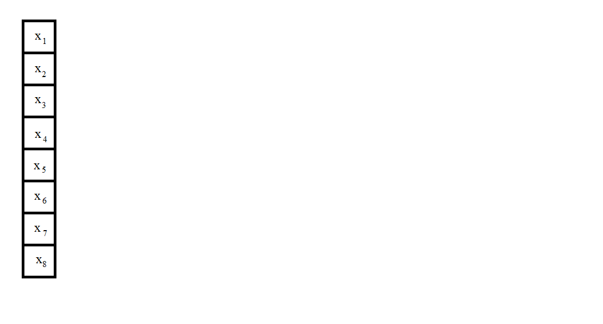

Założeniem Szbkiej Transformacji Fouriera jest wyznaczenie dyskretnej transformaty szybciej niż w przypadku Dyskretnej Transformacji Fouriera.
ck=N−1∑n=0fne−2πikn/N, k= 0,1, . . . , N−1,
Szybka transformacja polega na osobnym policzeniu transformaty dla liczb
parzystych i
nieparzystych a potem połączeniu ich:
1.Dzielimy tablice liczb zespolonych na dwie tablice
parzystych i
nieparzystych.
2.Otrzymane tablice liczb parzystych i nieparzystych ponownie zwracamy do programu. Czyli wywołujemy funkcje z nimi jako argumentami.
3.Robimy tak dopóki nie uzyskamy tablic pojedyńczych tak jak na gifie poniżej.
4.Otrzymane w ostatnim kroku tablice parzystych i nieparzystych przekształcamy mnożąc liczby nieparzyste przez podany wzór, a potem dodając i odejmując otrzymaną liczbę od liczby parzystej.
5.Otrzymane w ten sposób sumę ustawiamy na pierwszej pozycji tablicy, a różnice na pierwszej pozycji drugiej połowy tablicy.
6.Wynik tego obliczenia zwracamy otrzymując transformate.
Oto przykład poprawnego działania algorytmu. Na czerwono zaznaczone są tablice liczb nieparzystych, a na zielono parzystych.
